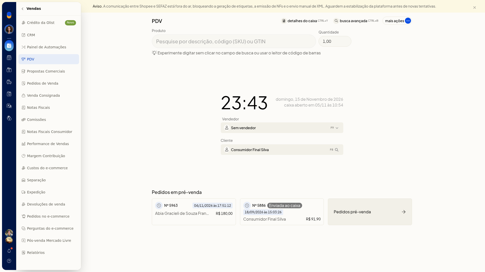
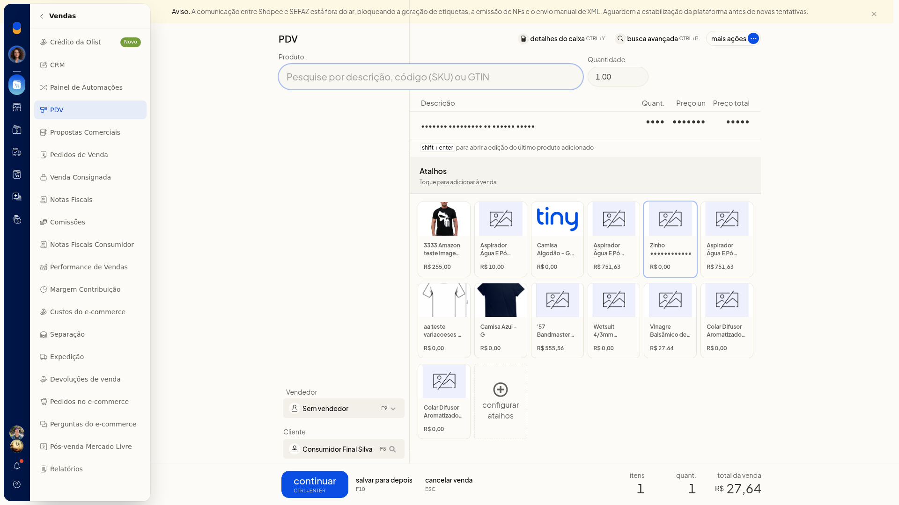
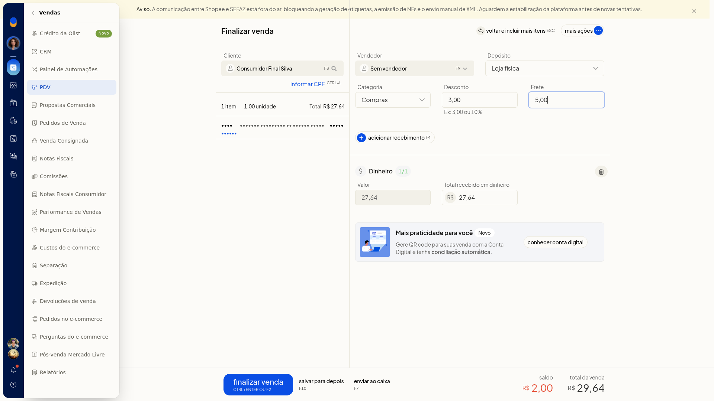
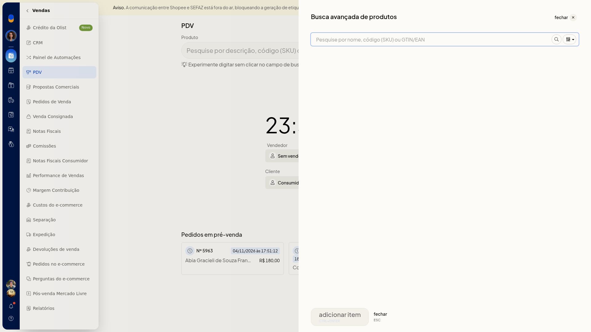
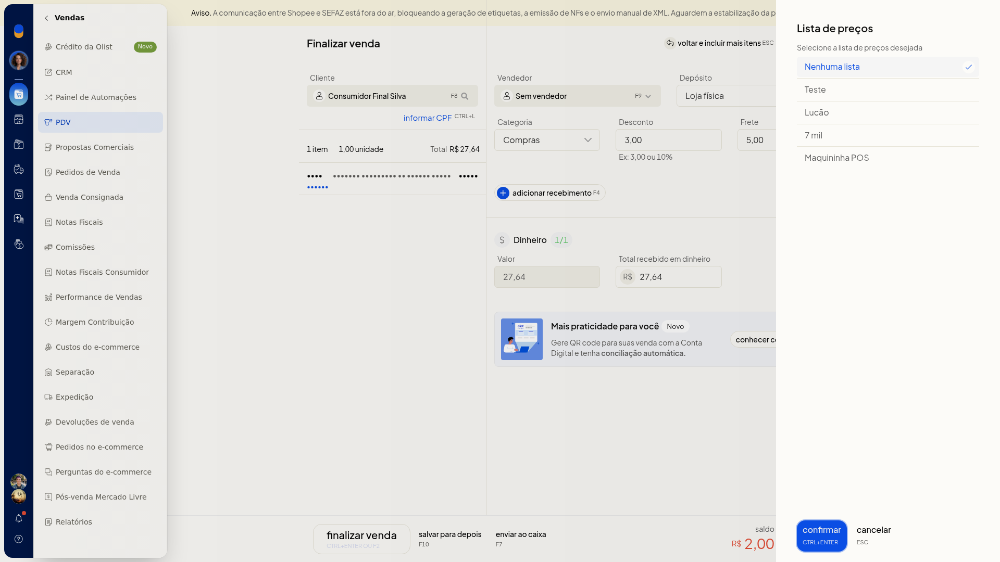
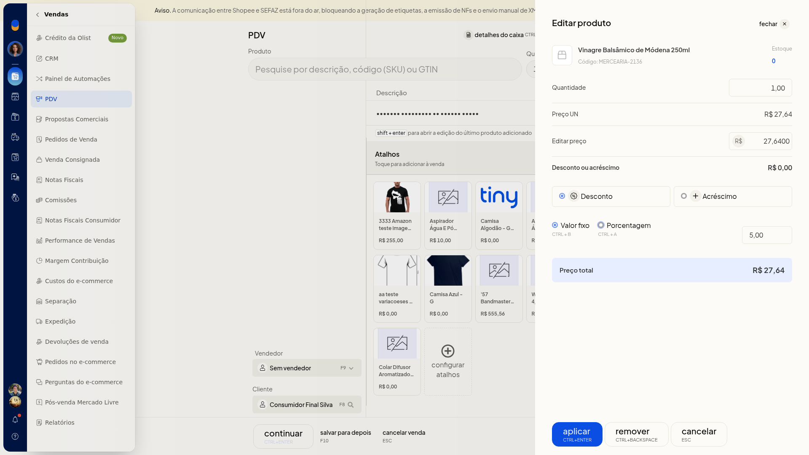
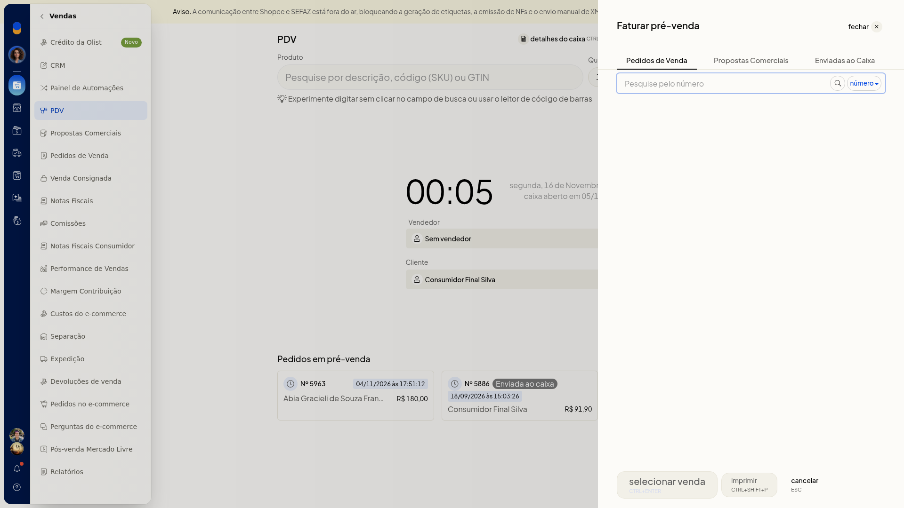
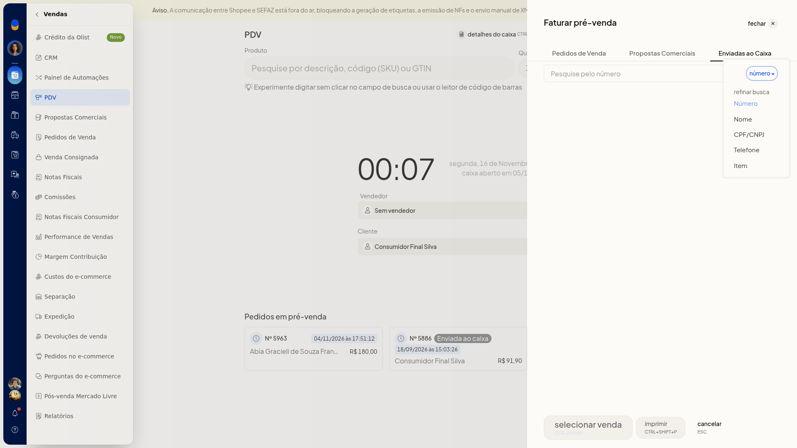
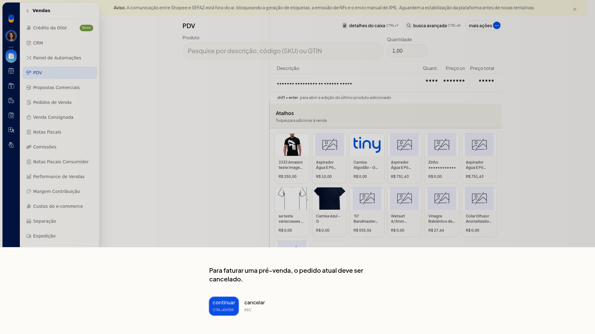

PDV: realizar vendas (inclui pré-venda e descontos)
No PDV da Olist você monta a venda com produto do catálogo ou item não cadastrado, informa cliente e vendedor, escolhe a lista de preços e aplica desconto, acréscimo ou frete. O recebimento pode ser em dinheiro, cartão, Pix, crediário, cashback, vale-troca, vale-presente ou outras formas da tela.
Você também guarda a venda para depois, envia ao caixa ou abre o faturamento de uma pré-venda. O caminho é Vendas > PDV, no ERP da Olist.
Importante
- Para concluir a venda, informe o vendedor quando essa exigência estiver ativa no PDV.
- Para concluir a venda, o cliente precisa ter CPF ou CNPJ quando essa exigência estiver ativa no PDV.
- Para faturar uma pré-venda, cancele antes a venda em andamento. A tela avisa quando isso for necessário.
- Para faturar a pré-venda, você precisa poder editar vendas. Se a opção não aparecer, peça acesso ao administrador da conta.
Instruções
Montar a venda
-
Acesse Vendas > PDV.

-
Informe o produto na busca e a Quantidade, com vírgula decimal. A linha passa a exibir unidade, preço unitário e total. Quantidade, Cliente e Vendedor não são obrigatórios.

-
Informe o Cliente com F8 e o Vendedor com F9. Em Vendedor, há a opção Sem vendedor.
-
Abra Mais ações para Usar item não cadastrado, Informar cliente, Selecionar lista de preços e Faturar pré-venda.

-
No recebimento, escolha a forma. As formas numeradas são Dinheiro, Crediário, crédito, débito, Pix e Múltiplas. Em Outras aparecem Boleto, Cheque, Depósito, Vale-troca, Meli, Crypto - Bitcoin, Mercado pago, Cashback e Vale-presente.

-
Na finalização em dinheiro, informe o CPF com CTRL+L, se quiser. Escolha o Depósito e a categoria. Preencha Desconto e Frete em reais: os dois não são obrigatórios e alteram o total, o troco e o saldo. Um desconto de R$ 3,00 reduz o total e pode gerar troco; um frete de R$ 5,00 aumenta o total e pode deixar saldo.
-
Clique em finalizar (CTRL+ENTER ou F2). A venda mostra o item, o recebimento escolhido e os totais com desconto, frete, troco ou saldo. Para voltar, use ESC. Para incluir outro recebimento, use adicionar recebimento (F4).

Buscar o produto e selecionar a lista de preços
-
No PDV, abra Busca avançada (CTRL+B), também em Mais ações.
-
Use Código, Código (parcial), Código no fornecedor, GTIN/EAN, Descrição ou Palavras-chave. Esses critérios não são obrigatórios. Use Não refinar quando não quiser restringir a busca.

-
Na etapa do item, abra Mais ações > Selecionar lista de preços (CTRL+G). Escolha Nenhuma lista ou uma lista cadastrada.

Aplicar desconto ou acréscimo
-
Na linha do item, edite o último item com Shift+Enter.
-
Ajuste Quantidade, o valor em R$ ou Desconto ou Acréscimo. Escolha Valor fixo (CTRL+B) ou Porcentagem (CTRL+A). O campo não é obrigatório.

-
Na finalização, preencha Desconto e Frete e confira total, troco e saldo antes de clicar em finalizar (CTRL+ENTER ou F2).
Salvar a pré-venda e faturar
-
Na venda em andamento, clique em salvar (F10) para guardar para depois ou em enviar ao caixa (F7). A pré-venda fica salva ou enviada ao caixa.
-
Abra Pedidos pré-venda. As abas são Pedidos de Venda, Propostas Comerciais e Enviadas ao Caixa.

-
Filtre por Número, Nome, CPF/CNPJ, Telefone ou Item.

-
Para faturar, abra Mais ações > Faturar pré-venda somente depois de cancelar a venda em andamento. Se a venda ainda estiver aberta, a tela pede o cancelamento do rascunho antes de seguir.

Resultado
A venda fica com a linha do item, o recebimento escolhido e os totais atualizados por desconto, frete, troco ou saldo. A pré-venda salva ou enviada ao caixa aparece nas abas de Pedidos pré-venda.
Informações adicionais
Atalhos da venda
Abra Mais ações > Mostrar atalhos (ctrl+?).

- F8 informa o cliente e F9 o vendedor, na tela inicial.
- F10 salva a venda para depois e F7 envia a venda ao caixa.
- CTRL+G abre a lista de preços e Shift+Enter edita o último item.
- Na finalização: ESC volta, F4 adiciona recebimento, CTRL+ENTER ou F2 finaliza, CTRL+DEL cancela e CTRL+L informa o CPF.
- F3 devolve a venda ao vendedor.